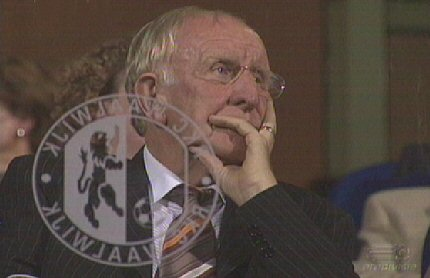

|
RKC
- Roda JC (2-0) 9 september 2005
|
Roda treedt aan bij het verrassend goed presterende RKC Waalwijk.
Luinge is de scheidsrechter tussen het wonderkindje en het zorgenkindje.

Nadat Roda de eerste 9 minuten domineert is de storm snel uitgeraasd en
vervalt de ploeg in het oude stramien van fantasie- en besluiteloos voetbal.
Het gebrek aan kwaliteit is navrant. Zelfs scheidend bestuurslid Hendriks
ziet dit onder ogen en overdenkt hier wellicht zijn laatste (?) blunder.
De eerste kans was voor de zwaar teleurstellende Cissé. De tweede voor
de eveneens knoeiende Sergio die ruim naast schiet.
Filipovic incasseert een terechte gele kaart en wordt in de tweede helft
vervangen door de verdedigend veel sterkere Lachambre.
Roda ploetert en RKC countert. Met succes! Na een leuk hakje tussen
De Ceulaer en Martens wordt de bal naar het hoofd van Hoogendorp
gestuurd die prompt 1-0 scoort in de 27e minuut.
Uit een corner van Dominique van Dijk scoort Martens 2-0, (74'). Game over!
Later bleek dat het niet eens een goal was, maar dat doet niks af aan de
terechte overwinning van RKC op het trieste Roda.
Het zeer zwaar zieke Roda JC zal op zoek moeten naar betere spelers, een
beter bestuur en naar een geheel nieuwe toekomst. De huidige club alsmede
de clubcultuur is tot een ongekende diepte gezakt....
© Koempels Pleasure Dome
|